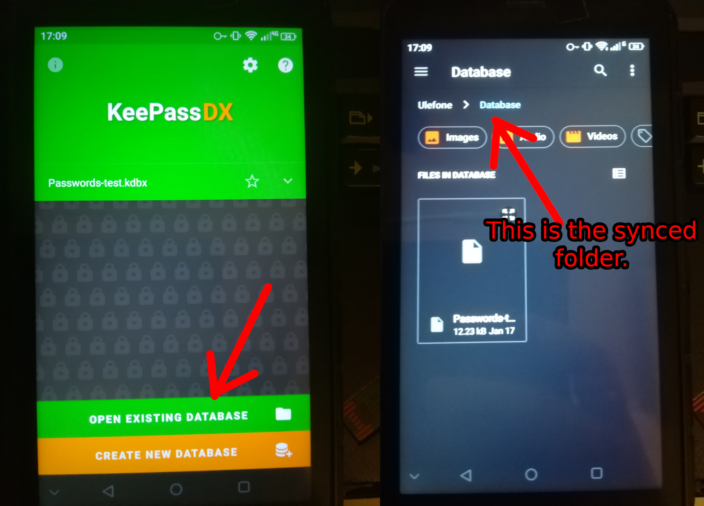

How to ditch a cloud password manager and keep the sync
Updated on: I have no damn clue
Bitwarden is a great service, but if you want maximum security for your passwords, this tutorial is exactly what you've been looking for.
The first thing we will need to do is...
Convert a Bitwarden database into a keepass one
- Download KeepassXC onto your computer, and KeepassDX on your phone.
- Go to Bitwarden's website, and log into your account.
- Go to
Tools > export to csv - Open KeepassXC on your PC, and load the .csv file
- Rearange the collums so they correspond to the actual data, as shown in the image.
- Click next, and save the database.
If you have never used any password manager before, all you have to do is create a new database. No conversion needed, obviously.
Sync it with all of your devices
Congratulations, your password database is now stored locally. But as I've promised, we are going to sync it.
- Download Syncthing, a peer to peer syncing tool. (This means that no data ever leaves your devices. They only share data between each other.)
- Launch it and connect your devices. This is a really simple thing to do, as it just involves scanning QR codes.
- Select which folders to sync, and which devices you want to sync it with. Afterwards a notification will popup on your phone, saying "Device X wants to share folder Y".
- Open keepass on your other devices, and open an existing database contained in the synced directory. 
On a phone:
On PC:
As you can see, the same file is synced between my phone and a PC. The name of the directory is different, but it still syncs the same files (Syncthing will ask you where do you want to keep the folder, and you can give it any name). Any change made to the directory on one device will be translated to all of them.
Done. Now each time syncthing is active, your password database will be synced with all of your devices you've added into syncthing.
Summary
You save a new password on your phone. KeepassDX saves it to the database contained in a specified folder.
Syncthing notices it, and sends the changed file to all of your devices.
Keepass on those devices will read the updated database, containing the new password.
Yes. It's that simple.